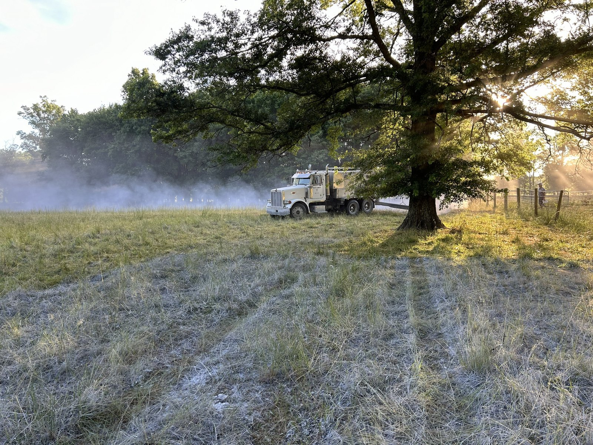
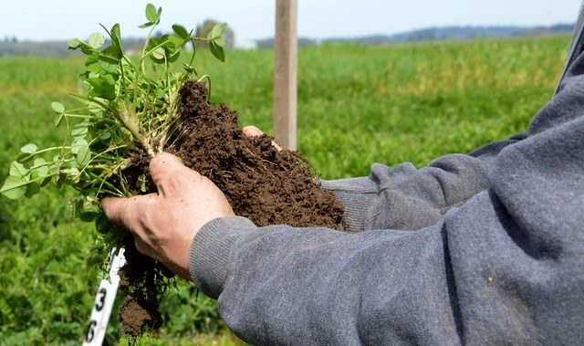
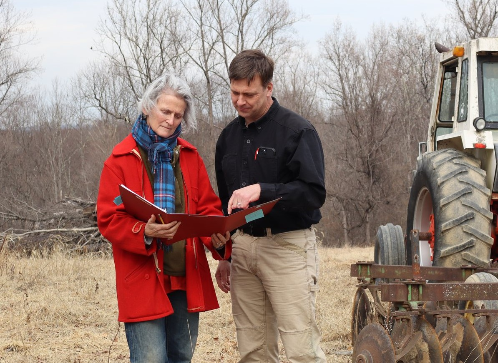

Expanding your livestock operation
Planning additional animals, facilities, manure handling, or grazing infrastructure.
Agricultural Conservation Planning
Kluthe Environmental Solutions helps farmers and landowners identify the natural resource concerns on their farms, evaluate practical options, understand the technical requirements of conservation practices, and develop plans that fit their operation — whether they are just beginning to explore a project or already have an NRCS contract in hand.
CNMPs • Conservation Planning • Organic Transition • Soil Health • Pest Management • CPA, DIA & CEMA Technical Services

Start With the Farm
Start with your farm and your goals. KES can help identify the conservation planning and technical services your project requires.
Planning additional animals, facilities, manure handling, or grazing infrastructure.
Improving storage, application, heavy-use areas, or production-area management.
Addressing soil health, erosion, nutrient efficiency, compaction, or declining productivity.
Improving pasture use, fencing, watering, forage management, or livestock movement.
Evaluating the transition process, production changes, conservation needs, and USDA requirements.
Planning pest management approaches that address crop needs while considering potential impacts to natural resources.
Not sure what comes next? KES can help you understand the technical services in your contract, what is required, important deadlines, and what needs to happen next.
Making Sense of the Process
Funding programs, technical requirements, engineering, nutrient management, conservation practices, and implementation schedules all have to fit together.
The decisions made during planning can shape what is actually possible later — which practices fit the operation, how the pieces work together, and how readily the project can move from contract to implementation.
KES helps you consider realistic conservation alternatives early, understand the trade-offs, and develop a plan that makes effective use of the conservation assistance available to your operation.
Who you choose to do the planning matters. A good planner helps you evaluate realistic conservation practices and systems, understand how they fit together, and make the most of the funding and implementation opportunities available to the farm.
Services
KES works across the farm to consider agricultural goals, resource concerns, technical requirements, and how conservation and production systems work together.

Planning for manure, livestock facilities, nutrient use, runoff, and production-area concerns.
Soil health, pest management, organic transition, nutrient efficiency, and practical agronomic planning.
Whole-farm planning, grazing management, erosion and resource concerns, and land-treatment strategies.
NRCS/TSP technical deliverables, contract interpretation, project coordination, field evaluation, mapping, and coordination with engineers and specialists.
How We Work
We start with your farm, your goals, and the problem you are trying to solve.
We look at technical requirements, realistic conservation alternatives, and how each would work on the farm.
We bring the technical requirements and conservation decisions together into a plan that works for the operation.
Good planning should lead to better decisions.
KES considers applicable requirements early so the plan reflects the landowner’s goals while accounting for the legal, property, and funding requirements that may affect implementation.
Federal and state financial assistance or cost-share programs, grants, and other funding sources may include policy, technical requirements, or other conditions that need to be considered during planning.
Applicable laws, regulations, permits, conservation easements, preserved-farm deed restrictions, and other property requirements may affect what can be done and where.
Why KES

KES was built around a simple idea: conservation planning should help farmers make better decisions, not add another layer of confusion.
KES is led by John Kluthe, principal consultant, who serves as the primary client contact and conservation planner. Often, projects require engineering or other specialized expertise — KES has longstanding working relationships with engineers and other technical specialists.
Before founding KES, John spent much of his career helping farmers solve conservation problems from inside NRCS. Today, KES brings that experience directly to farmers and landowners — combining an understanding of agriculture, NRCS requirements, and conservation practices with practical planning at the farm level.
The goal is not simply to complete the required paperwork. It is to help you understand your options, make informed decisions, and develop a plan that works for your operation.
Experience from inside the conservation system — now working directly for the client.
Field-level experience working directly with farmers and conservation programs.
Qualified to develop NRCS conservation plans and technical deliverables.
Agronomic background in soil, crop, and nutrient management.
B.S. in Agronomy, Missouri State University • M.S. in Forestry, University of Missouri
Client Experience
Our clients can tell you what it is like to work with KES.
Working with Kluthe Environmental Solutions was a great experience from start to finish. The communication was outstanding; John was always responsive and kept us informed throughout the process. He made everything easy to understand. We truly appreciate the work and expertise and highly recommend KES.
Working with Kluthe Environmental Solutions is pleasant, productive, and helped move my farm management goals forward. John took the time to understand my operation’s context, my growing philosophy, and my production goals to develop a clear and simple-to-implement plan in line with NRCS practice standards and USDA Organic regulations. Working with KES gives me an extra tool in my “tool belt” and a trusted advisor for my nutrient management and farm conservation planning needs!
I purchased a preserved farm in 2019 and began working with NRCS shortly thereafter. It was quite a learning curve for me, and working with KES on a CNMP was probably the easiest project to date. John understood the NRCS requirements and navigated within their restrictions. However, he was able to communicate with me at a level I could understand, which allowed me to make good long-term decisions for the farm.
The People Behind KES
Principal Consultant
John is the primary client contact and leads conservation planning, field assessment, and project coordination for KES. He works directly with farmers to understand the operation, evaluate conservation alternatives, and carry planning decisions through NRCS and other technical requirements into implementation.
Ecology & Sustainability Advisor
Brandy contributes an ecological and sustainability perspective to selected KES projects and provides technical and organizational support to the business.
Terrain Engineering, LLC
Matt is a licensed professional engineer and NRCS Technical Service Provider for engineering practices. Through Terrain Engineering, LLC, he works with KES on projects involving agricultural structures, site development, engineering design, and technical implementation support.
Goldenbaum Baill Engineering, Inc.
Eric is a licensed professional engineer with Goldenbaum Baill Engineering, Inc. His work includes site planning, grading and drainage, stormwater design, hydrologic analysis, and related civil engineering. He works with KES on structure drawings, site plans, and engineering coordination for agricultural projects.
KES also works with additional independent specialists when a project requires other technical expertise.
Start a Conversation
Have a conservation project in mind or an NRCS contract already in place? Start with a little information about your farm and what you’re working on.
Tell me where the farm is, what you’re working toward, and whether an NRCS contract is already part of the project.
John@KlutheEnvironmental.com
John@KlutheEnvironmental.com